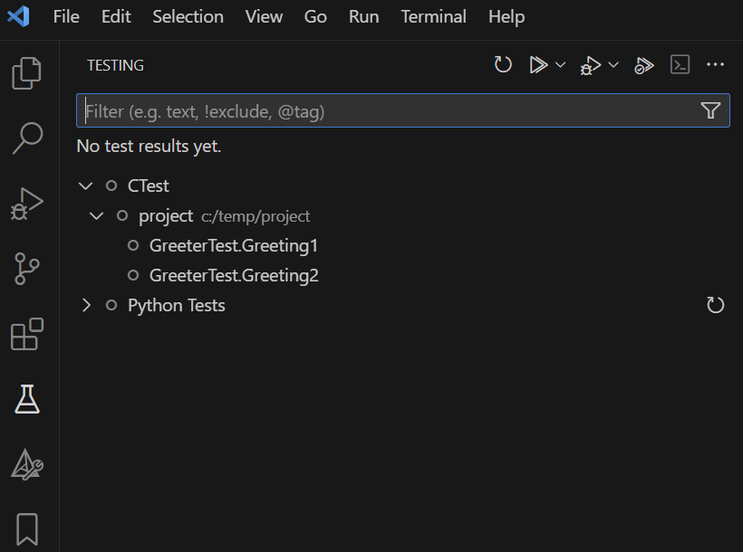

Making Unit Tests Visible in Visual Studio Code with CTest and GoogleTest#
Introduction#
Many C/C++ projects rely on CMake, GoogleTest (GTest), and GoogleMock (GMock) for unit testing. Sometimes developers want to see and run/debug these tests directly in their IDE.
In this blog post, I will show how to make the unit tests visible in Visual Studio Code (VS Code) using CTest and GoogleTest. I will start by explaining the standard way to build and run the tests with CMake. Then we will see how CTest can help us discover the tests and how to display them in the VS Code interface.
Building and Running Tests with CMake and GoogleTest#
In a typical setup one defines executables for each “component” with its own sources and unit tests files. There are CMake custom targets for every component to link the component sources and the test sources and execute the tests.
An instructive example of a CMakeLists.txt file is shown below:
1cmake_minimum_required(VERSION 3.20)
2project(MyProject)
3
4set(CMAKE_CXX_STANDARD 14)
5set(CMAKE_CXX_STANDARD_REQUIRED ON)
6set(gtest_force_shared_crt ON CACHE BOOL "" FORCE)
7
8# Add GoogleTest components
9add_subdirectory(${CMAKE_SOURCE_DIR}/build/external/gtest ${CMAKE_BUILD_DIR}/.gtest)
10
11# Configure directories to search for headers
12include_directories(
13 ${CMAKE_SOURCE_DIR}
14 ${CMAKE_SOURCE_DIR}/build/external/gtest/googletest/include
15 ${CMAKE_SOURCE_DIR}/build/external/gtest/googlemock/include
16)
17
18# Create the test executable
19add_executable(greeter greeter.c greeter_test.cc)
20
21target_link_libraries(greeter GTest::gtest_main GTest::gmock_main pthread)
22target_compile_options(greeter PRIVATE -ggdb --coverage)
23target_link_options(greeter PRIVATE --coverage)
24
25# Run the test executable, generate JUnit report and return success independent of the test result
26add_custom_target(greeter_test ALL
27 BYPRODUCTS ${CMAKE_BUILD_DIR}/greeter_junit.xml
28 DEPENDS greeter
29 COMMAND greeter --gtest_output="xml:greeter_junit.xml" || ${CMAKE_COMMAND} -E true
30)
What this basically does is:
create a test executable
greeterthat links the sourcesgreeter.candgreeter_test.ccwith the GoogleTest librariescreate a custom target
greeter_testthat runs the test executable and generates a JUnit report
To build and run the tests, one would typically execute the following commands:
cmake -B build -S .
cmake --build build
This will build all targets and generate the test executable greeter and the JUnit report greeter_junit.xml.
1<?xml version="1.0" encoding="UTF-8"?>
2<testsuites tests="2" failures="1" disabled="0" errors="0" time="0." name="AllTests">
3 <testsuite name="GreeterTest" tests="2" failures="1" disabled="0" skipped="0" errors="0" time="0." >
4 <testcase name="Greeting1" file="greeter_test.cc" line="14" status="run" result="completed" time="0." classname="GreeterTest" />
5 </testsuite>
6</testsuites>
Discovering Tests#
Let us first shortly discuss on how one would discover the tests in the project.
Having the tests source files, one could try to parse them and extract the test cases. However, this is not a trivial task and it is error-prone. Imagine that a test is only enabled if a certain preprocessor definition is set. One should properly parse the (preprocessed) test source files to determine the list of relevant tests. I am not even touching on how creative some developers might be on creating their on macros to define tests.
Another approach is to “ask” the test executable to list the tests. This has the disadvantage that the test executable must be built and run. On the good side, the test executable knows exactly which tests are available and can provide additional information about them.
Indeed, the GTTest framework provides a way to list the tests.
Running the test executable with the --gtest_list_tests flag will list all the tests and their test cases.
greeter.exe --gtest_list_tests
Note
Calling the test executable with the --help option will print all the available options.
We will go with the second approach and determine the tests by running the test executable. CMake has a built-in tool called CTest that can help us with this.
Defining and running tests with CTest#
CTest is a testing tool that is part of the CMake suite. CMake facilitates testing through special commands and the CTest executable.
The integration is quite simple. One needs to “enable testing” and define tests using the add_test command:
include(CTest) # automatically calls enable_testing()
add_test(NAME greeter_test COMMAND greeter)
The add_test command has a simple syntax:
NAME- the name of the test, can be any stringCOMMAND- the command to run the test, in our case the test executablegreeter. This can be any command that is run in the shell and returns a status code (non-zero for failure).
To run the tests, one would execute the following command:
cd build
ctest
CTest has many options to control the test execution, like running only a specific test, running tests in parallel, or generating a JUnit report. For more information check the help or the documentation.
Details on how CMake/CTest work#
When testing is enabled, CMake generates a CTestTestfile.cmake file in the build directory.
This file will include all the tests defined with the add_test command.
When running ctest, CTest will read this file and execute the tests.
# CMake generated Testfile
add_test([=[greeter_test]=] "C:/project/build/greeter.exe")
set_tests_properties([=[greeter_test]=] PROPERTIES _BACKTRACE_TRIPLES "C:/project/CMakeLists.txt;34;add_test;C:/project/CMakeLists.txt;0;")
subdirs("/.gtest")
Important
This file is generated during CMake configure and does not require the test executable to be built. It is only used by CTest to run the tests, like having a target to run the test executable.
Discovering tests with GoogleTest CTest integration#
CMake provides a helpful module GoogleTest which simplifies test discovery and registration when using GTest:
include(CTest)
include(GoogleTest)
# Automatically discover all GoogleTest test cases in the greeter binary
gtest_discover_tests(greeter
# Optional: specify a WORKING_DIRECTORY or other properties
)
This approach removes the need to manually call add_test(NAME <some_name> COMMAND <test_executable>) for each test.
Instead, gtest_discover_tests takes care of enumerating them by parsing the output of the actual test binary.
Details on how GoogleTest CTest integration works#
When using gtest_discover_tests, CMake generates a CTestTestfile.cmake file that includes the tests discovered by GoogleTest.
After CMake configure (no tests executable are yet built nor executed) there is a CTestTestfile.cmake file that includes the tests discovered by GoogleTest.
There is a <component>_include.cmake file generated for every component which is just defines a dummy test.
if(EXISTS "C:/build/greeter[1]_tests.cmake")
include("C:/build/greeter[1]_tests.cmake")
else()
add_test(greeter_NOT_BUILT greeter_NOT_BUILT)
endif()
Executing ctest will fail because the command greeter_NOT_BUILT does not exist.
Important
CMake will add a custom command (see build.ninja build file) to generate the greeter_tests.cmake file.
This command will run the test executable and parse the output to generate the test cases.
After building the test executable, the greeeter[1]_tests.cmake file is generated and this contains all tests discovered by GoogleTest.
add_test([=[GreeterTest.Greeting1]=] C:/project/build/greeter.exe [==[--gtest_filter=GreeterTest.Greeting1]==] --gtest_also_run_disabled_tests)
set_tests_properties([=[GreeterTest.Greeting1]=] PROPERTIES WORKING_DIRECTORY C:/project/build SKIP_REGULAR_EXPRESSION [==[\[ SKIPPED \]]==])
add_test([=[GreeterTest.Greeting2]=] C:/project/build/greeter.exe [==[--gtest_filter=GreeterTest.Greeting2]==] --gtest_also_run_disabled_tests)
set_tests_properties([=[GreeterTest.Greeting2]=] PROPERTIES WORKING_DIRECTORY C:/project/build SKIP_REGULAR_EXPRESSION [==[\[ SKIPPED \]]==])
set( greeter_TESTS GreeterTest.Greeting1 GreeterTest.Greeting2)
Executing ctest will now run the tests and generate the JUnit report.
VS Code integration#
The CMake Tools extension for VS Code supports since version 1.14 a Test Explorer for CTest. The extension will automatically detect the CTest tests from the generated CTest files and display them in the Test Explorer.
This means that one can run, debug, and see the test results directly in the VS Code interface.
Of course, this approach inherits all the “limitations” of discovering the tests with CTest. After CMake configure, one will see only “_NOT_BUILT” tests in the Test Explorer.

Only after building the test executable, the tests will be visible.

Important
When executing the tests from the Test Explorer, before running the tests, the CMake Tools extension will start the current select CMake build target. This might be confusing if one switches between build targets and suddenly when executing a test, a target is build which has nothing to do with the test.
I think their idea is to ensure that the test executable is built before running the tests, to update the test cases.
When executing single tests, CTest is called with the --tests-regex option to run only the selected tests.
The problem is that when a test fails there is no way to go from the Test Explorer to the failing test.
This is a general issue with CTest that there is no automatic traceability between the test name and the test source file and line.
There is another VS Code extension CMake Test Explorer
which attempts to address this issue by using the CTest properties feature. I did not test this extension. Maybe in a future blog post.
Conclusion#
Integrating the unit tests in the VS Code interface is a nice feature to have. CTest and GoogleTest provide a good way to discover and run the tests. While not perfect, the integration with the CMake Tools extension for VS Code is a good start. One can run, debug, and see the test results directly in the VS Code interface.